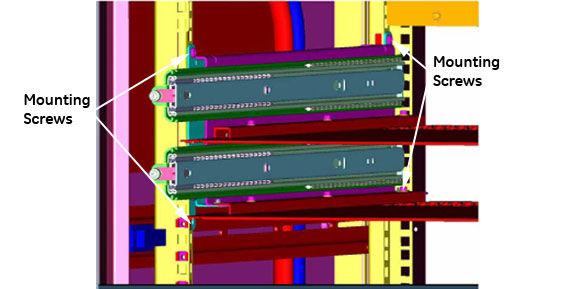

- 00000018WIA3029E030GYZ
- id_123737991.11
- Dec 10, 2024 10:24:25 PM
ICN Conversion Manual
Prerequisites
| Personnel requirements | |||
|---|---|---|---|
| Required persons | Preliminary requirements | Procedure | Finalization |
| 2 | 10 minutes | 60 per ICN minutes | 30 minutes |
| Replacement parts | ||||
|---|---|---|---|---|
| Item | Quantity | Effectivity | Part number | Manufacturer |
| Image Compute Node (ICN) - Sun 4100 | 1 for 16-channel systems; 2 for 32-channel systems | replacing ICN 4170 with ICN 4100 |
See FRU Manual | - |
| Image Compute Node (ICN) - Sun 4170 | 1 for either 16-channel or 32-channel systems | replacing ICN 4100 with ICN 4170 |
M7000JW | - |
| Software Collector (22.x) | 1 | replacing ICN 4100 with ICN 4170 |
See FRU Manual | - |
| ||||||||||||||||
Replacing ICN 4170 with ICN 4100
Removing ICN 4170
Procedure
- Locate the ICN 4170 in the PGR cabinet.
Figure 1. 4170 ICN Location  Note
NoteTo open the PGR cabinet, turn the key to the right. The cabinet handle pops out. Turn the handle bar to the left and the cabinet door opens.
- Loosen the thumbscrews on each side of the ICN.
Figure 2. ICN 4170 Thumbscrews 
Locate the two release tabs on the slide rails. Press both release tabs toward the center of the ICN while pulling the ICN forward until the rails release and the ICN is free. Place the ICN to the side in a safe area.CAUTION 
Figure 4. ICN Slide Rails and Release Tabs 
- Loosen the network switch and slide it down to access the mounting
screws.
Figure 5. Location of Mounting Screws 
Installing ICN 4100
Procedure
- Locate the placement for the mounting bracket in the cabinet.
Mount brackets for installation of ICN 4100 units. Be sure to orient
the brackets with the slot on the bottom.
Figure 7. ICN 4100 Side Mounting Brackets 
Figure 8. Mounting Brackets - Correct Orientation 
- Attach trays to mounting brackets as shown below.
Figure 9. Tray - Correct Orientation 
Insert ICN 4100 units into the PGR cabinet. Slide the ICNs out until the stop is reached at the end of the slide rails. Make sure the release tabs engage and the ICNs are locked into the rails.CAUTION - Connect all cables listed in ICN 4100 Wiring Matrix for Infiniband. Correct Cable Orientation shows the orientation
of cables when looking at the rear of the ICN. Green indicates ports
that should have cable inputs; red indicates ports that should NOT have cable inputs.Note
Ethernet connection should go to Net MGT, Eth 2, Eth 3 ports.
Table 2. ICN 4100 Wiring Matrix for Infiniband Connection Item ICN 4170 ICN 4100 32-Channel 16-Channel 32-Channel 16-Channel Power Cords 2 2 4 2 Ethernet 3 3 6 3 Duplex - Fiber Optic 2 1 2 1 Single Fiber Optic 2 1 2 1 Infiniband - Jumper N/A N/A 1 N/A Fiber Optic - Jumper N/A N/A 1 N/A Figure 10. Correct Cable Orientation 
Figure 11. Ethernet and Fiber Optic Connections 
Initializing ICN 4100
Procedure
Replacing ICN 4100 with ICN 4170
Removing ICN 4100
Procedure
- Locate the ICN 4100 in the PGR cabinet.
Figure 12. ICN 4100 Location  Note
NoteTo open the PGR cabinet, turn the key to the right. The cabinet handle pops out. Turn the handle bar to the left and the cabinet door opens.
- Loosen the thumbscrews on each side of the ICN(s).
Figure 13. ICN 4100 Thumbscrews 
- Remove all the connections at the back of the ICN(s).
Figure 14. ICN 4100 Cable Connections 
Locate the two release tabs on the slide rails. Press both release tabs toward the center of the ICN while pulling the ICN forward until the rails release and the ICN is free. Place the ICN to the side in a safe area.CAUTION Figure 15. ICN Slide Rails and Release Tabs - Remove the ICN trays from the ICN mounting brackets.
Figure 16. ICN 4100 Trays
Installing ICN 4170
Procedure
- Loosen the mounting screws for the network switch and slide
the switch down to give access to the mounting location for the slide
rails for the ICN 4170.
Figure 18. Network Switch Mounting Screws
Insert the ICN 4170 unit into the PGR cabinet. Slide the ICNs out until the stop is reached at the end of the slide rails. Make sure the release tabs engage and the ICNs are locked into the rails.CAUTION - Connect all cables listed in ICN Wiring Matrix for Infiniband. Correct Cable Orientation shows the orientation
of cables when looking at the rear of the ICN. Green indicates ports
that should have cable inputs; red indicates ports that should NOT have cable inputs.Note
Ethernet connection should go to Net MGT, Eth 2, Eth 3 ports.
Table 3. ICN Wiring Matrix for Infiniband Connection Item ICN 4170 ICN 4100 32-Channel 16-Channel 32-Channel 16-Channel Power Cords 2 2 4 2 Ethernet 3 3 6 3 Duplex - Fiber Optic 2 1 2 1 Single Fiber Optic 2 1 2 1 Infiniband - Jumper N/A N/A 1 N/A Fiber Optic - Jumper N/A N/A 1 N/A Figure 20. Correct Cable Orientation
Initializing ICN 4170
Procedure
Finalization
Finalization
-
Perform a test scan to ensure the system is working properly.
-
Provide the customer with the operator’s manual delivered with the FRU kit.